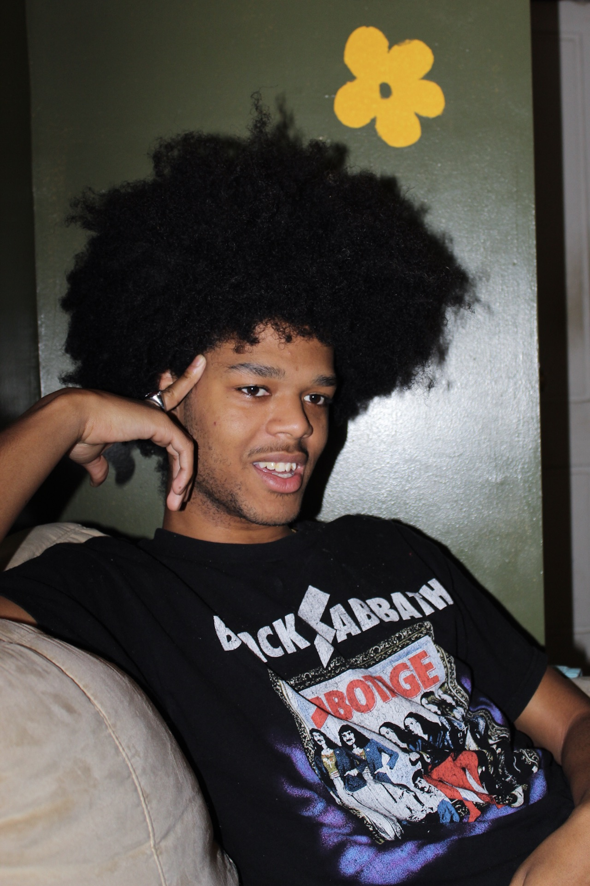
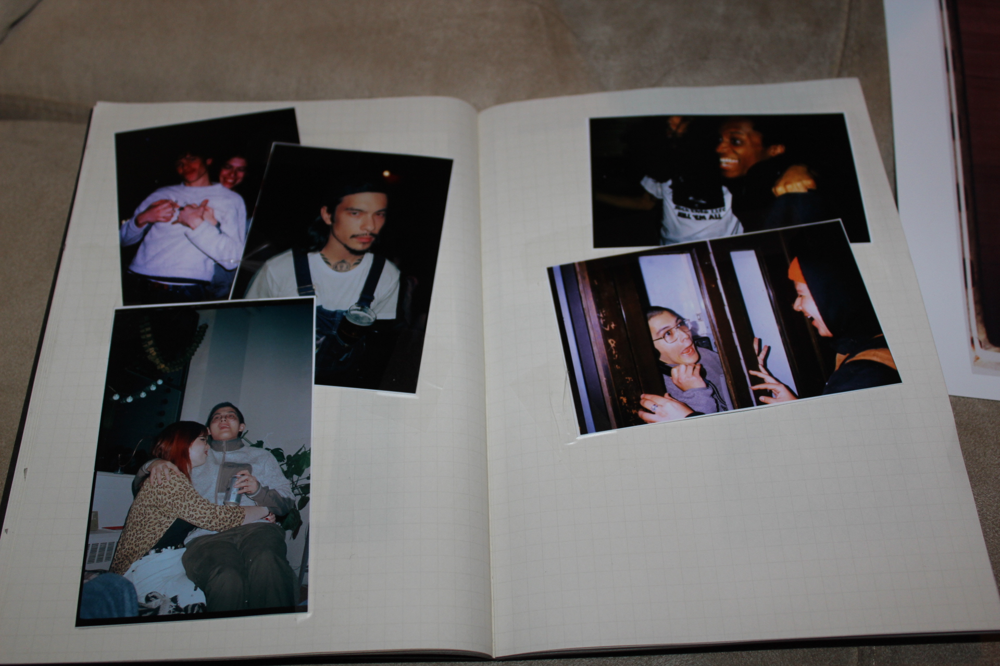

I chose to leave school in 2017, because I felt drained by my school’s environment. There were no artists, musicians, or creative minds that I was able to connect with, in my time at BMCC. I thought that if I worked a normal job, did my artwork whenever I could, and mingled with my creative friends, I would be fine. Sometimes I do worry that I will have no “proper” opportunities in the art world because of my decision to leave school though...
I can’t really say, because first and foremost my work only exists because I was in school when I experienced the magic of film photography. I would like to say that being out of school has helped me focus on drilling out my work at a feverish pace, but that would be a lie. I can say however, that not being in school has motivated me to do my own research on photographers, styles, and theories that I enjoy/align with..
Well, the process started with sorting through piles and piles of prints from 20+ rolls of film I shot in Europe. After picking the photos worthy of print, I had to sequence the book and lay it out in Indesign. I made the book because I value tangible representations of art. Though instagram and other social media/ online gallery spaces have their advantages, I think that one should always cover all bases. 50 copies is a tiny run, and the owners of the books are building a more intimate relationship with my work. I also wanted the book for myself haha!
Paint is too expensive...I couldn’t paint my cover, so the next best thing in my imagination was a collage. I was very inspired by the collage work I saw being done by a peer, Anders Newman, for Studio Paseo. I was also drawing inspiration from Russian constructivist posters! I still love looking at those. The first collage I made with these factors in mind was about one year and a half before the Worldwide Baby cover, and it was a reinterpretation of a Russian constructivist poster, whos name slips my mind right now.
I don’t really identify with “slumps” anymore. I think that when I find that I do not have anything to make, it is simply because I don’t have anything to say at that moment. It’s a good time to just live life; to read, to watch movies, to have great conversation, and find new music. I think that it is both natural and healthy to take breaks from art making, and to let it slip from your mind until it comes back on its own.
Right now I am working on myriad thoughts… A zine, a blog-like-site, a one of a kind book, ect.. I think the biggest challenge right now, is to operate in this space between action and thought. It is so easy to have the greatest ideas and think the best of your mind, as though you are the voice of a generation, and never act on it. Hahaha.